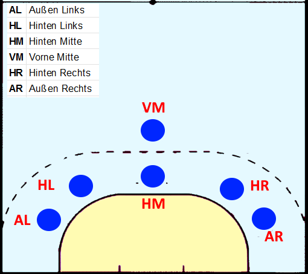
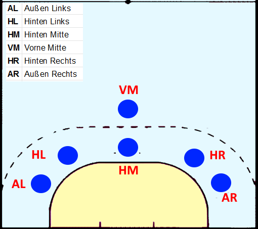
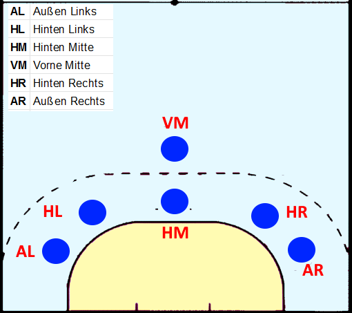

Abwehr
Auch die Abwehr ist besonders divers. Verschiedene Aufstellungen bringen verschiedene Vorteile und enstehen bei verschiedenen Szenarien. Hier sind die 3 beliebtesten/nützichsten
Handball ist ein schneller und dynamischer Teamsport, der sowohl Kraft als auch Geschicklichkeit erfordert. Zwei Teams treten gegeneinander an, mit dem Ziel, den Ball ins gegnerische Tor zu werfen. Doch was genau macht Handball aus?
Handball wird auf einem rechteckigen Spielfeld gespielt, das 40 Meter lang und 20 Meter breit ist. Jedes Team besteht aus sieben Spielern: sechs Feldspieler und ein Torwart.
Spielzüge sind festgelegte Bewegungsabläufe und Kombinationen, die ein Team im Angriff nutzt, um die gegnerische Verteidigung zu überwinden und Torchancen zu kreieren. Sie sind ein wesentlicher Bestandteil der Taktik im Handball und erfordern präzise Abstimmung, Kommunikation und Übung. Spielzüge werden meist vom Mittespieler angesagt und heißen bei jedem Verein anders. Als Beispiel habe ich Spielzüge aus meiner Manschaft genommen.

Auch die Abwehr ist besonders divers. Verschiedene Aufstellungen bringen verschiedene Vorteile und enstehen bei verschiedenen Szenarien. Hier sind die 3 beliebtesten/nützichsten